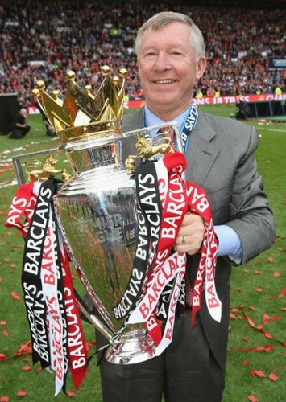

Chương 37

ăm 2003, lúc vừa nhậm chức HLV trưởng Real Madrid, Carlos Queiroz trao cho giám đốc Jorge Valdano một danh sách những cầu thủ ông muốn mua, đứng đầu danh sách ấy là Cristiano Ronaldo của Sporting Lisbon. Valdano lại chần chừ chưa quyết định ngay, nên để mất Ronaldo vào tay Sir Alex [1]. Năm năm sau, Real phải hỏi mua siêu sao người Bồ từ Manchester United với giá 70 triệu bảng, đồng thời hứa hẹn trả lương cho anh 15 triệu bảng một năm. Số tiền quá lớn khiến Ronaldo không cưỡng nổi sự cám dỗ. “Nếu thật họ chịu trả như thế”, anh lên tiếng, “tôi sẽ đến Real”.
Sir Alex không đời nào chịu bán cầu thủ hạt nhân. “Ronaldo hãy còn bốn năm hợp đồng”, ông quả quyết, “Nếu không muốn chơi cho United nữa thì phải xuống đá cho đội hình hai…Bán cho Real ấy ư? Một con vi rút tôi cũng không bán!” Hết hạn chuyển nhượng, quả nhiên Ronaldo vẫn là người của United. Những tưởng mọi chuyện thế là kết thúc, về sau mới biết Sir chỉ chiến thắng tạm thời: Ronaldo chỉ đồng ý ở lại thêm một năm. Song có vẫn còn hơn không. Ronaldo đang ở đỉnh cao sự nghiệp, thêm một năm nghĩa là thêm một chức VĐQG, một Cúp C1, hãy cứ hy vọng như thế đi. Và khi bảo vệ thành công Cúp C1, biết đâu Ronaldo không đổi ý, ở lại vĩnh viễn.
Không những giữ được Ronaldo, Sir Alex còn tăng cường lực lượng với tiền đạo Dimitar Berbatov từ Tottenham, tuy với cái giá không được phải chăng cho lắm. Khi United đang đàm phán với White Hart Lane, Manchester City bỗng nhảy vào định hớt tay trên, sẵn sàng trả 30 triệu bảng, buộc Quỷ Đỏ phải cắn răng nâng giá lên 30.75 triệu mới mua nổi ngôi sao người Bulgaria[2].
Sir Alex vốn vẫn coi thường người hàng xóm cùng thành phố. “Đó là một đội bóng nhỏ, với một tinh thần nhỏ”, ông chế giễu, “Ngày này qua ngày khác, họ chỉ nói về Manchester United, chẳng biết gì khác”. Lời Sir dĩ nhiên là thậm xưng, nhưng cũng có cơ sở của nó. Trên một phương diện nhất định, City đúng là chỉ biết mỗi United: Hễ nhìn thấy màu đỏ, họ cho đó là United (tại sao không là Liverpool hay một đội nào khác?). Nhân viên làm việc cho City, không ai được phép đi xe màu đỏ; trong những nhà hàng của City, ngay cả sốt cà chua cũng màu…xanh!
Vậy nhưng City năm 2008 đã không còn là City của ngày xưa. Nếu như Chelsea có “bố già” Nga Roman Abramovich, City nay cũng có ông hoàng Ả Rập tên dài ngoằng ngoẵng Mansour bin Zayed bin Sultan Al Nahyan đứng chống lưng. Y như Abramovich, ông hoàng Ả Rập vãi tiền như nước cho CLB của mình sắm cầu thủ. Chụp hụt Berbatov, City chẳng có gì tiếc nuối. Trước đó, họ đã bỏ ra hơn 120 triệu bảng mua đến mười một cầu thủ, đủ để lập một đội hình hoàn toàn mới. Các vị lãnh đạo City thậm chí hỏi mua Ronaldo với giá 135 triệu. Có điều, Ronaldo dù mê tiền đến đâu cũng vẫn còn lý trí, chẳng dại gì chuyển sang đội bóng đại kình địch.
Mất mát lớn duy nhất của United trước mùa giải mới đến từ băng ghế huấn luyện. Carlos Queiroz, vị trợ lý đắc lực cho Sir Alex, trở về Bồ Đào Nha lãnh trách nhiệm dẫn dắt ĐTQG. Chẳng thể trách Queiroz, bởi ai có thể từ chối lời gọi mời của quê hương? Thế vào chỗ Queiroz là cựu cầu thủ Mike Phelan. Mất mát nhỏ, mang tính tạm thời thì có…Ronaldo, do anh bị chấn thương, phải nghỉ đến cuối tháng chín.
Vắng Ronaldo, United rơi xuống tận hạng 15. Khi anh trở lại và liên tục nổ súng, đội từ từ thăng tiến, tới tháng 11 thì lên được hạng ba. Ngày 30 tháng 11, trong trận gặp gã nhà giàu mới nổi City, Ronaldo nhận thẻ đỏ rời sân, nhưng Quỷ Đỏ vẫn thắng 1-0 bằng bàn duy nhất của Rooney.
Khá bất ngờ, đội liên tục dẫn đầu bảng không phải Chelsea, mà là cựu hoàng Liverpool. Đầu tháng một 2009, Liverpool vẫn gác United bảy điểm. Như thường lệ, mỗi lúc bị bỏ lại đằng sau, Sir Alex sẽ chọc ngoáy đối thủ. “Ôi tôi biết thừa!”, ông thả mồi, “Nửa sau mùa giải căng thẳng lắm, Liverpool thế nào cũng run rẩy cho mà xem”. Rafa Benitez cắn phải câu, nổi giận đùng đùng. Sir Alex nói mỗi một lời, còn ông ta cầm giấy đọc một bài diễn văn dằng dặc hạch tội Sir:
-Chính Manchester United mới là đội đang run, họ run vì chúng tôi đang đứng đầu. Hôm nay tôi sẽ nói thẳng, nói hết cho các bạn nghe nhé. Trận gặp Wigan năm ngoái ấy, Rio Ferdinand rõ ràng chơi bóng bằng tay trong vòng cấm địa, vậy mà trọng tài không thổi phạt đền. Nhờ vậy, họ mới thắng trận, và nhờ thắng trận đó mới vô địch…Ông Ferguson bị điều tra tội phát ngôn bừa bãi về các trọng tài Martin Atkinson và Keith Hackett, nhưng cuối cùng chẳng bị phạt gì cả. HLV nào cũng bị phạt, riêng Ferguson là không ai dám phạt…Cứ tuần nào có đá banh là United gây áp lực lên trọng tài. Cứ đá ở Old Trafford là đội khách có người bị đuổi, đội chủ nhà chẳng thấy ai bị đuổi bao giờ…
Hai ngày sau bài “diễn văn” của Benitez, Vidic, Rooney, và Berbatov cùng nhả đạn, giúp United thắng Chelsea 3-0. Trong vòng một tuần tiếp theo, Quỷ Đỏ lần lượt đả bại Wigan và Bolton, chính thức lên ngôi đầu bảng. Có lẽ Benitez trước kia chưa run, sau khi Sir Alex “gợi ý” thì ông ta run thật sự?
Vững vàng cho đến tháng ba, United chợt mất đà khi tiếp Liverpool tại Old Trafford. Như thể ngầm bảo Benitez “đừng phán bậy bạ, chúng tôi luôn công bằng”, trọng tài rút thẻ đỏ đuổi Nemanja Vidic, khiến chủ nhà thua muối mặt 1-4. Chưa hồi phục sau cú sốc, United lại thua Fulham 0-2. Trận kế tiếp gặp Aston Villa, Ronaldo sớm mở tỷ số, trước khi đối phương lật ngược thế cờ, gác lại 2-1. Tương lai Ronaldo và đồng đội bỗng trở nên mờ mịt, bởi nếu thua trận thứ ba liên tiếp, họ sẽ bị Liverpool vượt mặt. Giữa tình thế nước sôi lửa bỏng, giải pháp của Sir Alex là gì? Ông tung ra sân tiền đạo…Federico Macheda.
Macheda là ai? Ngôi sao nào? Thưa rằng: Chẳng phải sao số gì sất, mà là cầu thủ thuộc đội trẻ United, hôm ấy mới lần đầu được đăng ký trong danh sách đội một. Không ai ngờ Sir Alex lại chọn ngay thời khắc sinh tử để đưa anh ra thử lửa. Vậy mà nước cờ liều của Sir phát huy tác dụng. Macheda vào sân được 20 phút, Ronaldo lập công, gỡ hòa. Đến phút 93, đích thân Macheda nhận bóng từ Giggs, xoay người tung sút, đưa bóng lượn vòng vào góc xa khung thành, ấn định tỷ số 3-2. Sáu ngày sau đó, cũng nhờ bàn thắng quyết định của Macheda, United tìm được trận thắng khít khao 2-1 trước Sunderland. Hai khoảnh khắc xuất thần của tiền đạo 17 tuổi người Ý đập tan giấc mơ VĐQG sau 19 năm của Liverpool.
Được Macheda hà hơi tiếp sức, Quỷ Đỏ lấy lại sự tự tin vốn có. Ngày 25 tháng tư, bị Tottenham dẫn 2-0, Ronaldo và Rooney cùng lập cú đúp, Berbatov ghi bàn còn lại, đem về chiến thắng 5-2. Ngày 10 tháng năm, đội lần thứ nhì qua mặt Manchester City, với các bàn thắng do công Ronaldo và Tevez. Một điểm giành được trước Arsenal trong trận áp chót mùa giải đưa United đến với chức VĐQG Anh lần thứ 18, ngang bằng với Liverpool. Năm 1986, lúc mới đặt chân đến Old Trafford, Sir Alex, dẫu đầy tham vọng, không thể ngờ đến một thành tích huy hoàng như thế.
Hai cầu thủ United gây ấn tượng mạnh nhất tại giải ngoại hạng là Edwin van der Sar và Ryan Giggs. Suốt từ ngày 15 tháng 11, 2008 đến 18 tháng 2, 2009, thủ thành người Hà Lan lập kỷ lục bắt 14 trận liên tiếp không hề thủng lưới bàn nào. Tính cả mùa giải, anh lập lại kỷ lục của Petr Cech mùa 2004-2005: giữ sạch lưới trong 21 trận. Trong khi đó, lão tướng Ryan Giggs trải qua một mùa bóng hồi xuân. Tuổi đã cao, không còn những pha đột phá xé gió bên đường biên, nhưng với kinh nghiệm đầy mình, Giggs đọc thế trận tốt hơn. Anh chơi bó vào trung tâm, thường xuyên kiến tạo cơ hội cho đồng đội với những đường chuyền thông minh, sắc sảo. Năm 2009, Giggs nhận giải Cầu Thủ Xuất Sắc Nhất Nước Anh của PFA, và VĐV Thể Thao Xuất Sắc Nhất Đại Anh Quốc của BBC[3].
Bên cạnh chức VĐQG lần thứ ba liên tục, United thắng Tottenham trên những loạt luân lưu, giành Cúp LĐ. Đội cũng giành Cúp Vô Địch Thế Giới Các CLB lần đầu trong lịch sử, sau khi đánh bại Gamba Osaka (Nhật) 5-3, và Liga de Quito (Ecuador) 1-0, với bàn duy nhất của Rooney.
Vẫn chơi xuất sắc, song mùa 08-09, dấu ấn Ronaldo tại giải ngoại hạng không rõ rệt bằng tại Cúp C1. Vượt qua vòng đấu bảng, United chạm trán Inter Milan của Jose Mourinho, trong hai lượt đấu làm gợi nhớ ký ức 1999. Hòa 0-0 ở Ý, United thắng trận lượt về 2-0, nhờ hai pha đánh đầu của Vidic và Ronaldo. Porto những tưởng là đối thủ dễ thở, nhưng lại gây nhiều khó khăn cho Quỷ Đỏ trong vòng tứ kết. Hòa 2-2 đầy bất lợi ngay tại Old Trafford, United thắng vất vả 1-0 trên sân đối phương, bằng cú sút xa trái phá từ cự ly 40m của Ronaldo.
Mùa năm ngoái, có đến ba CLB Anh vào tranh bán kết: Liverpool, Chelsea, Manchester United. Mùa này vẫn vậy, chỉ khác ở chỗ Arsenal thế chân Liverpool. United may mắn tránh được hai đối thủ cứng cựa hơn là Chelsea và Barcelona, chỉ phải gặp Pháo Thủ. Lượt đi, đá sân nhà, đội hơi gây thất vọng vì chỉ thắng 1-0 nhờ công John O’Shea. Tuy nhiên, lượt về tại Emirates chứng kiến một Quỷ Đỏ thăng hoa đầy hứng khởi. Ngay phút thứ 8, Park Ji Sung đã tận dụng sai lầm của hậu vệ Arsenal, ghi bàn mở tỷ số. Ba phút sau, từ vị trí đá phạt cách khung thành xa tít tắp, Ronaldo quất bóng như hỏa tiễn. Thủ thành Almunia chắc không ngờ đối phương dám sút, nên phản ứng hơi chậm, không cứu nổi bàn thua. Bước vào hiệp hai, Ronaldo thêm lần nữa tỏa sáng. Anh đánh gót phát động đường phản công cho United, rồi bắt tốc độ chạy suốt chiều dài sân, đón đường căng ngang của Waye Rooney, ghi bàn thắng thứ ba. Bàn rút ngắn tỷ số của Arsenal chỉ mang tính danh dự.
Lần thứ nhì trong hai năm, Manchester United gặp Barcelona trong trận chung kết. Và lần thứ nhì, hai cầu thủ xuất sắc nhất của bóng đá đương đại, Cristiano Ronaldo và Lionel Messi, có dịp đọ tài. Lịch sử lần này không đứng về phía quỷ: Từ khi Cúp C1 mang tên Champions League cho đến nay, chưa một CLB nào bảo vệ thành công danh hiệu. Hơn nữa, giữa hai đội bóng ngang sức ngang tài như United và Barca, rất khó có chuyện đội này thắng đội kia hai trận liên tiếp. United vừa thắng năm ngoái, nên năm nay, người ta có cảm giác Barca sẽ làm nên chuyện.
Quả thật, ở Rome đêm ấy, vận may rời bỏ Ronaldo và đồng đội. 10 phút đầu tiên, United có ba cơ hội làm bàn, nhưng phung phí cả ba. Trong những trận đấu lớn, chỉ một cơ hội bỏ lỡ có thể khiến mọi nỗ lực đổ sông đổ biển, huống hồ là ba. Đánh phủ đầu bất thành, United để rơi thế trận vào tay Barcelona. Eto’o rồi Messi lần lượt lập công, đem cúp bạc về Tây Ban Nha.
Không Cúp C1, hy vọng mỏng manh giữ lại Ronaldo tan thành mây khói. Hè năm ấy, Ronaldo sang Real Madrid với giá chuyển nhượng kỷ lục 80 triệu bảng. Lần đầu tiên từ lúc đến Old Trafford, Sir Alex bị “giựt” mất cầu thủ yêu thích. David Beckham hay Van Nistelrooy đều do Sir chủ động bán ra, còn Ronaldo rõ ràng là bị giựt. Giữa Sir Alex và Ronaldo không hề có mâu thuẫn; thầy luôn muốn giữ trò, trò cũng coi thầy như cha.
Nhưng đồng tiền là…ông nội!

Danh hiệu VĐQG thứ 18 cho Manchester United (ảnh: Cheh-cheh.com)
[1] Thật trớ trêu, cũng chính Queiroz là người đứng ra làm trung gian, mời Manchester United đến đấu giao hữu với Sporting Lisbon. Quá ấn tượng với những gì Ronaldo thể hiện trong trận này, Sir Alex quyết định mua anh.
[2] Hai gương mặt mới khác ở Old Trafford là cặp anh em song sinh 18 tuổi người Brazil: Rafael và Fabio da Silva.
[3] Giải thưởng của BBC được trao từ năm 1955. Cho đến nay, mới có năm VĐV bộ môn bóng đá được vinh danh: Bobby Moore, Paul Gascoigne, Michael Owen, David Beckham, và Ryan Giggs.